#504 · vertical · vertical · 6432x8336 · Public domain File:Girl worker at lunch also absorbing California sunshine, Douglas Aircraft Company, Long Beach, Calif. LOC 2179923542.jpg Alfred T. Palmer · 1280x1659 https://commons.wikimedia.org/wiki/File:Girl_worker_at_lunch_also_absorbing_California_sunshine,_Douglas_Aircraft_Company,_Long_Beach,_Calif._LOC_2179923542.jpg
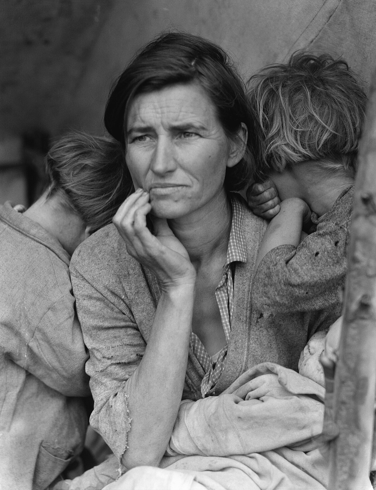
#505 · vertical · vertical · 6205x8066 · Public domain File:Lange-MigrantMother02.jpg Dorothea Lange · 1280x1664 https://commons.wikimedia.org/wiki/File:Lange-MigrantMother02.jpg
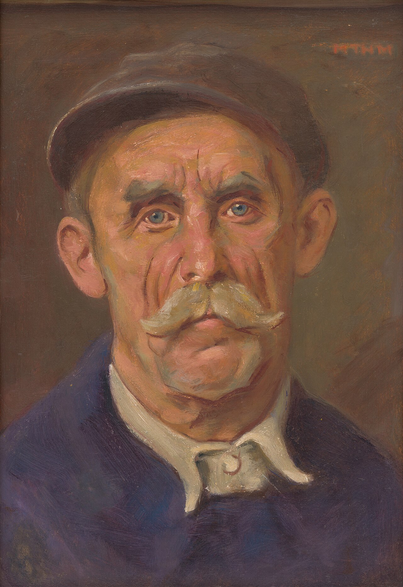
#506 · vertical · vertical · 3435x5000 · Public domain File:Milan Thomka Mitrovský - Portrait of a Worker - O 2691 - Slovak National Gallery.jpg Milan Thomka Mitrovský · 1280x1863 https://commons.wikimedia.org/wiki/File:Milan_Thomka_Mitrovsk%C3%BD_-_Portrait_of_a_Worker_-_O_2691_-_Slovak_National_Gallery.jpg
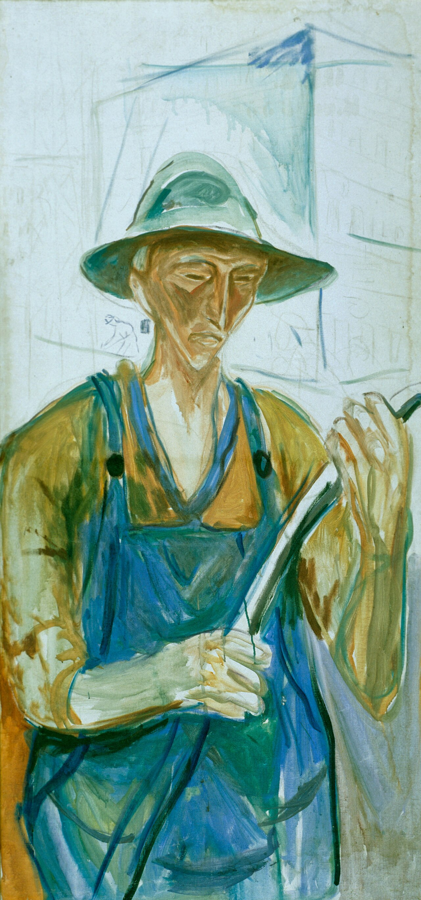
#507 · vertical · vertical · 1594x3403 · Public domain File:Munch - Building Worker, 1929, MM.M.00855 (cropped).jpg Edvard Munch · 1280x2733 https://commons.wikimedia.org/wiki/File:Munch_-_Building_Worker,_1929,_MM.M.00855_(cropped).jpg
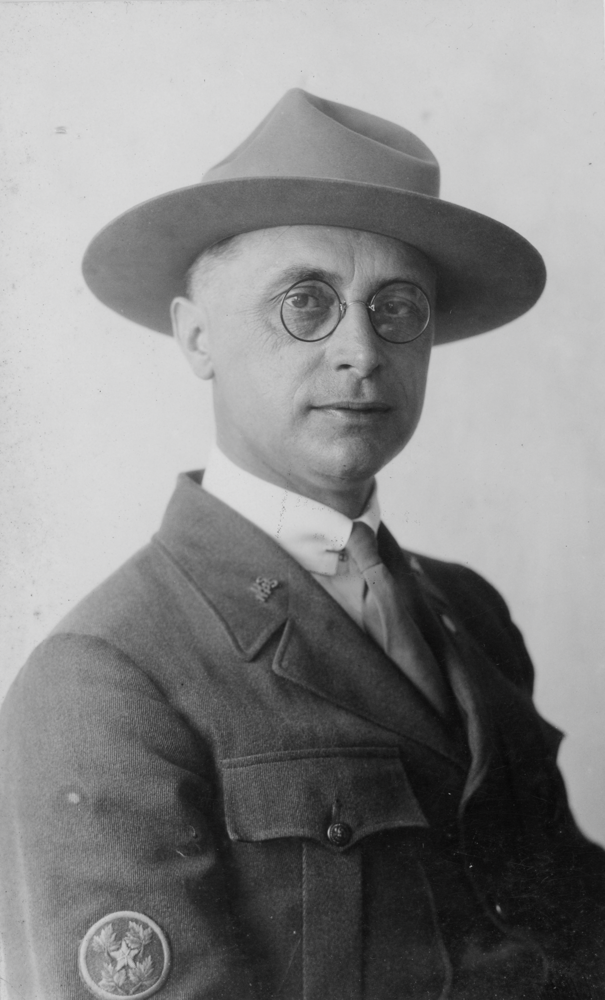
#508 · vertical · vertical · 2334x3854 · Public domain File:Portrait of Arno B. Cammerer (bc829d05-d5e4-46ce-83b5-d9a27f8fc309).tif Hill, Henry F. - Honolulu Star Bulletin · 1280x2114 https://commons.wikimedia.org/wiki/File:Portrait_of_Arno_B._Cammerer_(bc829d05-d5e4-46ce-83b5-d9a27f8fc309).tif
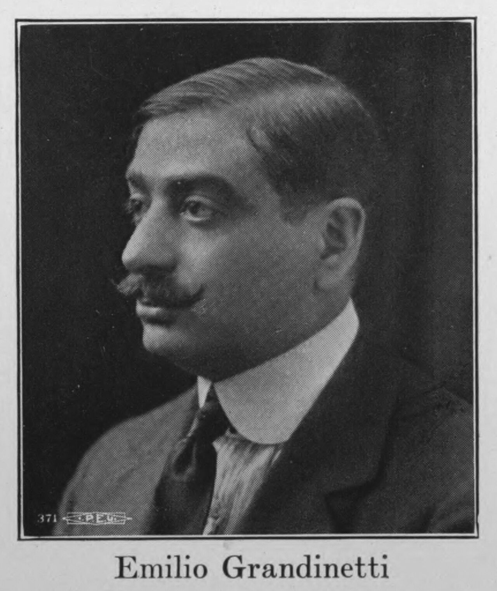
#509 · vertical · vertical · 2525x3000 · Public domain File:Portrait of Emilio Grandinetti.tif 371 I. P. E. U. [International Photo-Engravers Union of North America] · 1280x1521 https://commons.wikimedia.org/wiki/File:Portrait_of_Emilio_Grandinetti.tif
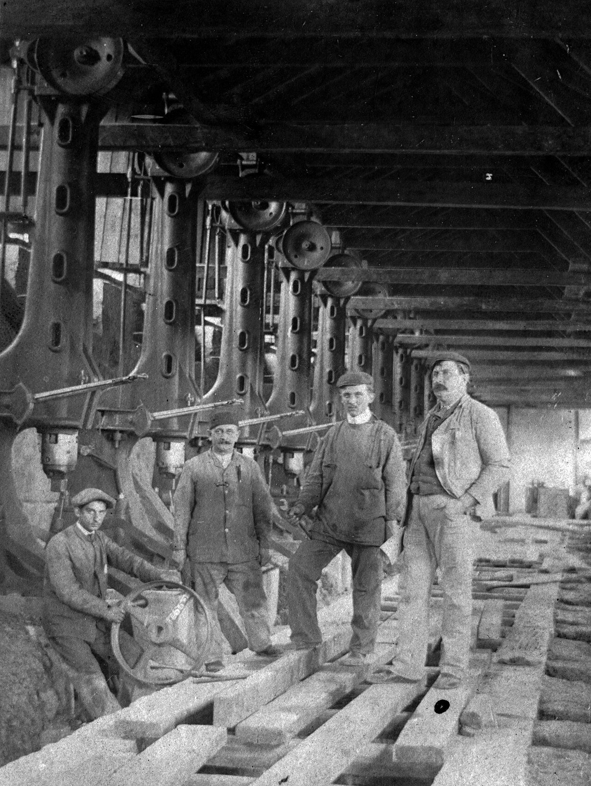
#510 · vertical · vertical · 2648x3521 · Public domain File:Worker, manual labor, men, tableau, factory Fortepan 19500.jpg FOTO:Fortepan — ID 19500: Adományozó/Donor: Saly Noémi. archive copy at the Wayback Machine · 1280x1702 https://commons.wikimedia.org/wiki/File:Worker,_manual_labor,_men,_tableau,_factory_Fortepan_19500.jpg#511 · vertical · vertical · 1800x2281 · Public domain File:Man working.jpg Bill Branson (Photographer) · 1280x1622 https://commons.wikimedia.org/wiki/File:Man_working.jpg#512 · vertical · cuadrada · 3746x3746 · CC0 File:Always smile (Unsplash).jpg michael m_minimal · 1280x1280 https://commons.wikimedia.org/wiki/File:Always_smile_(Unsplash).jpg
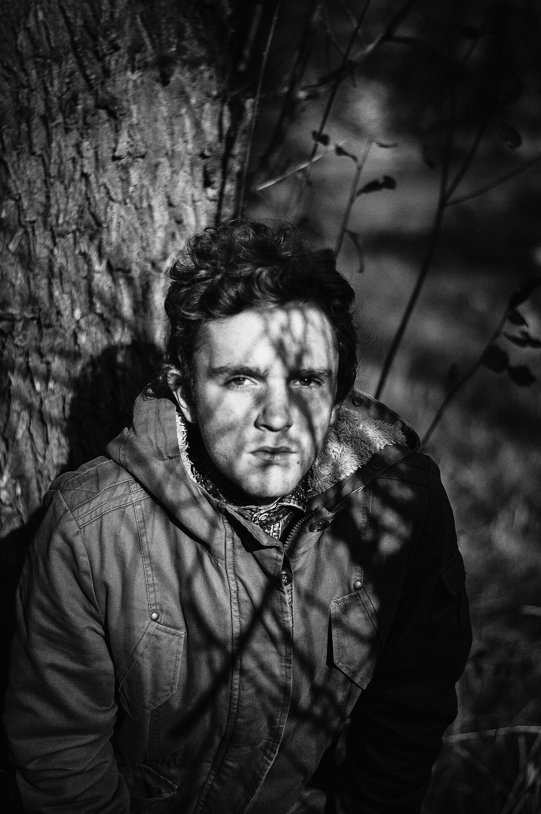
#513 · vertical · vertical · 4000x6016 · CC0 File:Black and white portrait (Unsplash).jpg A. Xromatik axromatik · 1280x1925 https://commons.wikimedia.org/wiki/File:Black_and_white_portrait_(Unsplash).jpg
#523 · detalle · horizontal · 4965x3924 · Public domain File:Frances (Appleton) Longfellow to Matilda Lieber, 23 February 1850 (6e488b49-e644-4202-b2fd-ac437426efd3).jpg Fanny (Appleton) Longfellow (1817-1861) · 1280x1012 https://commons.wikimedia.org/wiki/File:Frances_(Appleton)_Longfellow_to_Matilda_Lieber,_23_February_1850_(6e488b49-e644-4202-b2fd-ac437426efd3).jpg
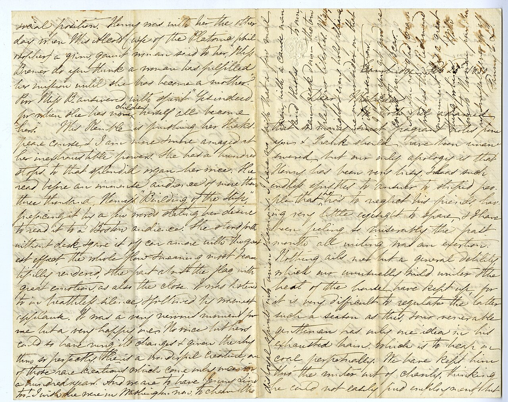
#524 · detalle · horizontal · 4965x3924 · Public domain File:Frances (Appleton) Longfellow to Matilda Lieber, 23 February 1850 (78a85ec9-5d06-4dc3-9dee-8685edd5c9b7).jpg Fanny (Appleton) Longfellow (1817-1861) · 1280x1012 https://commons.wikimedia.org/wiki/File:Frances_(Appleton)_Longfellow_to_Matilda_Lieber,_23_February_1850_(78a85ec9-5d06-4dc3-9dee-8685edd5c9b7).jpg
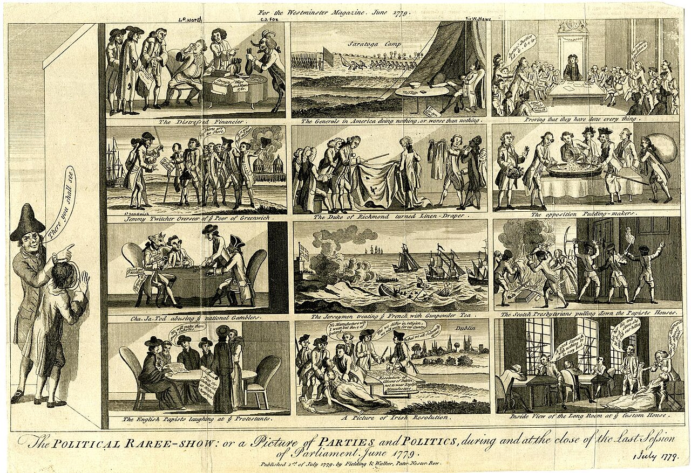
#525 · detalle · horizontal · 1600x1097 · Public domain File:The political raree-show- or a picture of parties and politics, during and at the close of the last session of Parliament, June 1779 (BM 1868,0808.4594).jpg · 1280x878 https://commons.wikimedia.org/wiki/File:The_political_raree-show-_or_a_picture_of_parties_and_politics,_during_and_at_the_close_of_the_last_session_of_Parliament,_June_1779_(BM_1868,0808.4594).jpg
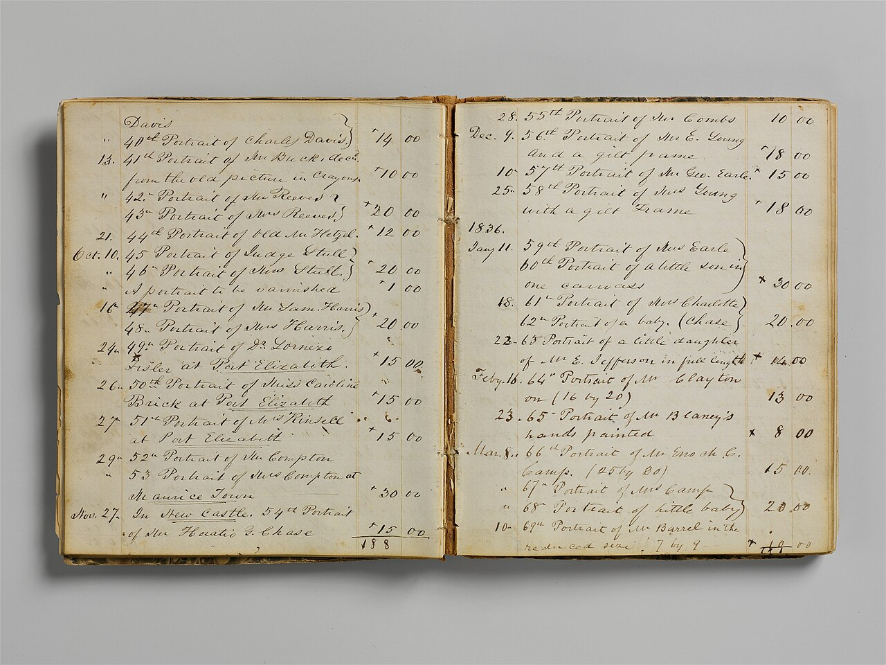
#526 · detalle · horizontal · 4000x3000 · CC0 File:Account Book Ledger MET DP214203.jpg John Carlin · 1280x960 https://commons.wikimedia.org/wiki/File:Account_Book_Ledger_MET_DP214203.jpg
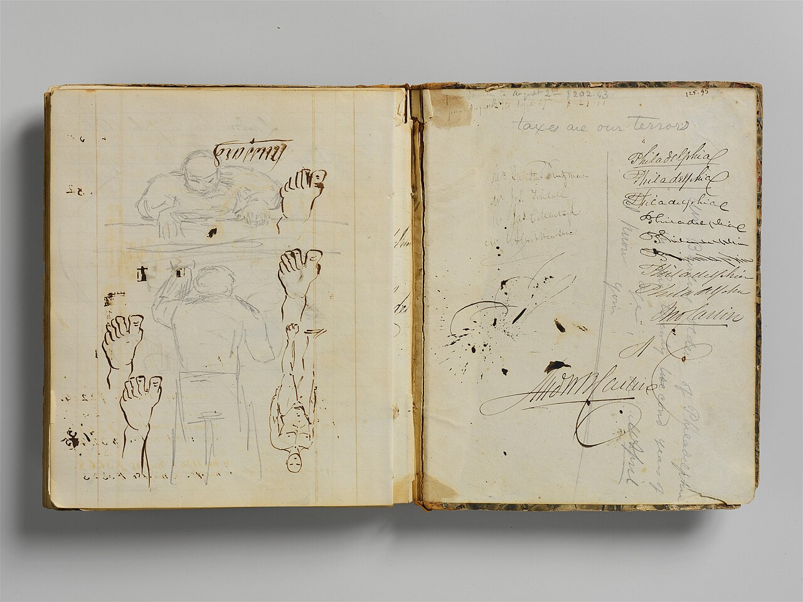
#527 · detalle · horizontal · 4000x3000 · CC0 File:Account Book Ledger MET DP214204.jpg John Carlin · 1280x960 https://commons.wikimedia.org/wiki/File:Account_Book_Ledger_MET_DP214204.jpg
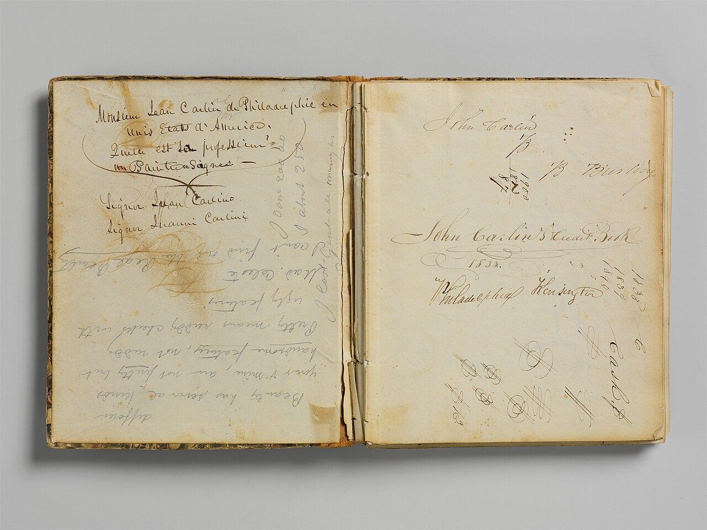
#528 · detalle · horizontal · 4000x3000 · CC0 File:Account Book Ledger MET DP214205.jpg John Carlin · 1280x960 https://commons.wikimedia.org/wiki/File:Account_Book_Ledger_MET_DP214205.jpg
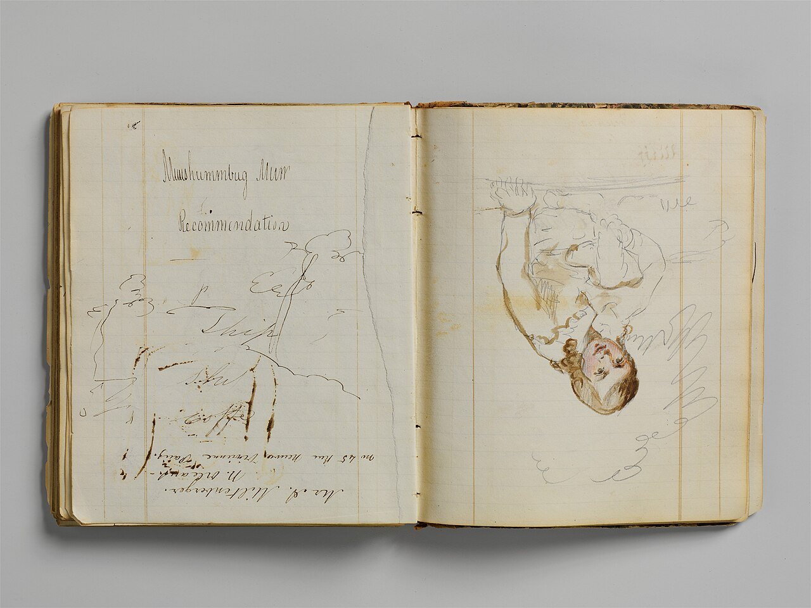
#529 · detalle · horizontal · 4000x3000 · CC0 File:Account Book Ledger MET DP214206.jpg John Carlin · 1280x960 https://commons.wikimedia.org/wiki/File:Account_Book_Ledger_MET_DP214206.jpg